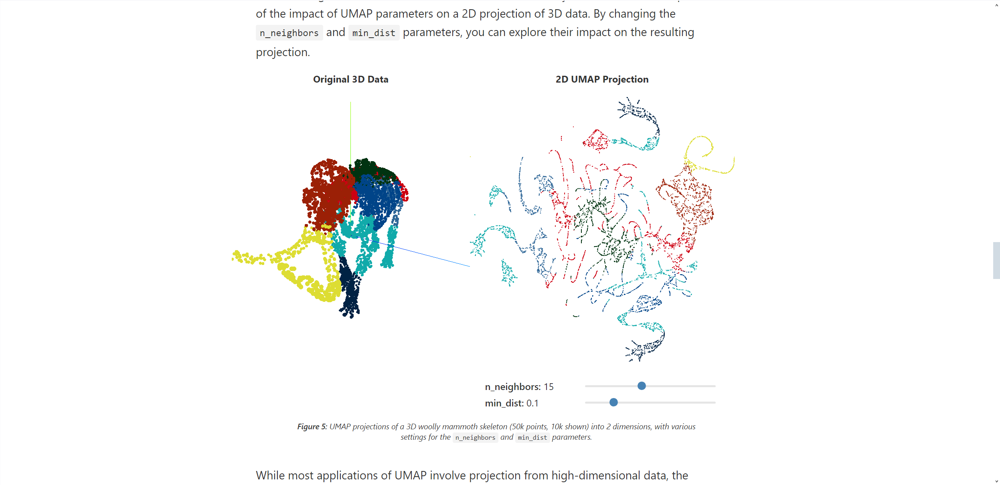

WHAT IS SVM?
OVERVIEW
From the name Support Vector Machines, SVM is a machine learning algorithm that can classify multidimensional data. This is done using a hyperplane, which is essentially a decision boundary, that will divide and separate the data points into clear and well-defined groups. The term Support Vectors refers to the points from the data groups that have the shortest Euclidean distance to the hyperplane, defining a margin. This determines how well the model is performing. The larger the margin s width, the better the model as the data groups will be well defined and the predictions will be more accurate.
OPERATION
In very simple terms, the process consists of a series of operations where the hyperplane is placed in different positions between data points until it finds the placement the separates the points into distinct groups and has the largest possible margin. In the following animation we can appreciate an extremely slowed down version of said process.
The SVM model can also operate with non-splitable data by using a feature called the kernel trick. This hyperparameter allows us to make the data split by accessing a higher dimensional plane where the data can be separated by the splitting plane.
HOW TO USE SVM
GENERAL CONSIDERATIONS
First, as with any supervised learning algorithm, it is key to have a good dataset with no missing values. It s also crucial that these values are either numerical or categorical or can be converted into those data types. To achieve this, libraries like Pandas and sci-kit learn offer multiple methods for data amputation and imputation.
HYPER PARAMETERS
To properly work with SVM (or any other algorithm in any case) it is necessary to understand what are the editable parameters that we can manipulate and how the inputted values affect our predictions.
C: This might be the most crucial of parameters in SVM. It allows us to control the tolerance for misclassification of data points to achieve a greater hyperplane margin. A lower C value allows for a larger margin and more potential for misclassifications. A larger C value will do the opposite. Grid Search and Randomized Search are common methods for tunning the c value.
Kernel: As we saw before with the Kernel trick, this hyperparameter allows us to handle data that can be separated linearly by bringing it to a higher dimensional space where linear separation is possible. The are many types of kernel application besides linearly:
Polynomial: Used when data simply cannot be separated by a linear hyperplane. To use this kernel it is also necessary to tune the Degree and Coef0 hyperparameters.
Radial Basis Function (RBF): It is the standard non-linear kernel. It creates an area around the data points forming groups. It is affected by the Gamma(y) hyperparameter, where a smaller y value means a loose perimeter around the points, while a larger value creates a tighter and more defined curve around the data groups.
Sigmoid: This kernel creates a series of non-linear curves that separate the data points in a more detailed way than the linear classification method. For this kernel it is necessary to tune the Gamma and Coef0 hyperparameters.
Gamma(y): It affects the radius of influence that the data points have. A large gamma value means a smaller and more precise radius. This can be beneficial for more precise results, but it can also lead to overfitting.
Degree: It affects the complexity of the polynomial kernel. A larger number creates more complexity.
Coef0: in polynomial and sigmoid kernels it affects the position of the decision boundary. Positive value makes the boundary closer to the positive side of chart. A negative value does the opposite.
Probability: This is a Boolean parameter that, when set to True, allows the algorithm to output a probabilistic estimate.
Max Iter: Allows us to set the maximum number of iterations for training our algorithm. This can have a huge impact on the training time and the model fitting.
In general terms, there s no recipe for getting good results with parameter setting. As specified before, the sci-kit learn library offers methods to fine tune our hyperparameters, but it is generally considered good practice to also try and manually identify a good range of values and kernel type. HAPPY TUNNING!
ARCHITECTURAL APPROACHES
In this section you will find some curated examples of how SVM has been used in the AEC industry. Note: most of the links will lead to academic research papers. Some sites might require institutional credentials to access the contents.

In this paper, researchers used the SVM to categorize green urban features such as plant types, tree Hight, green percentage, etc…
Shen, Yanting, Xu, Yiwen, Kong, Weikang, Fei, Fan, Chen, Xilong, Huang, Chenyu and Yao, Jiawei

In this research a variant of SVM, called SVR(support vector regression) is applied.
Kim, Jong Bum, Kim, Seongchan and Aman, Jayedi

The researchers apply SVMs to auto detect architectural styles with a high degree of precision.
Tiemen Strobbe, Francis wyffels, Ruben Verstraeten, Ronald De Meyer, Jan Van Campenhout,
REFERENCES AND SOURCES
This entry in the data camp website was extremely useful to comprehend the inner workings of SVM models. It was also a great source of inspiration on how to visualize the model through charts.
This webpage served as a huge inspiration on how to make interactive 3D objects that could show and explain quite difficult processes. It serves as an example of the highest standards when it comes to animation and interactivity.